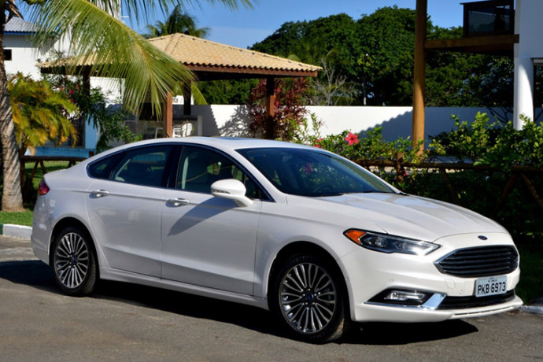

Serviços Ford
Serviços Ford



Planos de Manutenção Programada
-
Adesão a planos de manutenção pré-pagos da Ford, oferecendo
coberturas diversas para as revisões periódicas do seu
veículo, com preços fixos e a conveniência de incluir o valor
no financiamento.
-
Benefícios como a utilização de peças genuínas Ford, mão de
obra especializada e a previsibilidade dos custos de
manutenção, contribuindo para a valorização do seu carro.
Ford Assistance 24 Horas
-
Serviço de assistência emergencial 24 horas por dia, 7 dias
por semana, disponível para proprietários de veículos Ford em
caso de pane, acidente ou outras eventualidades.
-
Cobertura que pode incluir reboque, socorro mecânico, auxílio
em caso de pneu furado e até mesmo hospedagem ou transporte
alternativo, dependendo das condições.
Serviços de Reprogramação e Chipagem (Performance)
-
Otimização da central eletrônica (ECU) do motor para melhorar
o desempenho, a potência e o torque do seu veículo Ford,
dentro dos limites de segurança e legislação.
-
Ajustes personalizados que podem também visar a economia de
combustível, dependendo das preferências do cliente. Verificar
a legalidade e os impactos na garantia.
Serviços de Funilaria Expressa
-
Reparos rápidos e eficientes em pequenos danos na lataria do
seu Ford, como arranhões, amassados leves e pintura, com o
objetivo de minimizar o tempo de parada do veículo.
-
Utilização de técnicas modernas que visam um reparo ágil e com
qualidade, mantendo a originalidade da pintura em muitos
casos.
Serviços de Higienização Interna com Produtos Específicos Ford
-
Limpeza detalhada do interior do seu Ford utilizando produtos
recomendados pela marca, focando na remoção de sujeira,
manchas e odores.
-
Higienização do sistema de ar condicionado com produtos
antibacterianos e antifúngicos, promovendo um ambiente interno
mais saudável.
Serviços de Cristalização de Para-brisas
-
Aplicação de uma camada protetora no para-brisas do seu Ford
que repele água, melhora a visibilidade em dias de chuva e
facilita a remoção de insetos e sujeira
-
Aumento da segurança ao dirigir em condições climáticas
adversas e potencial redução do uso do limpador de
para-brisas.
Serviços de Instalação de Acessórios de Segurança Ford
-
Instalação de alarmes, travas de segurança, películas
anti-vandalismo e outros acessórios originais Ford para
aumentar a proteção do seu veículo.
-
Integração perfeita com o sistema eletrônico do veículo,
garantindo o funcionamento correto e a compatibilidade com
outros recursos.
Serviços de Diagnóstico de Emissões e Regulagem de Motores
-
Verificação e ajuste dos parâmetros do motor para garantir que
o seu Ford esteja dentro dos limites de emissão de poluentes
estabelecidos por lei.
-
Otimização do funcionamento do motor para melhorar a
eficiência e reduzir o impacto ambiental.